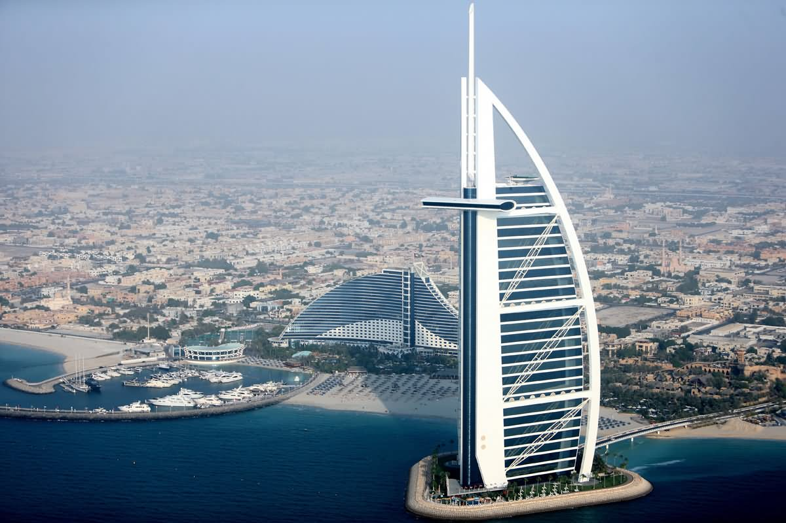

The history of human settlement in the area now defined by the United Arab Emirates is rich and complex, and points to extensive trading links between the civilisations of the Indus Valley and Mesopotamia, but also as far afield as the Levant.] Archaeological finds in the emirate of Dubai, particularly at Al-Ashoosh, Al Sufouh and the notably rich trove from Saruq Al Hadid show settlement through the Ubaid and Hafit periods, the Umm Al Nar and Wadi Suq periods and the three Iron Ages in the UAE. The area was known to the Sumerians as Magan, and was a source for metallic goods, notably copper and bronze. The area was covered with sand about 5,000 years ago as the coast retreated inland, becoming part of the city's present coastline. Pre-Islamic ceramics have been found from the 3rd and 4th centuries. Prior to the introduction of Islam to the area, the people in this region worshiped Bajir (or Bajar). After the spread of Islam in the region, the Umayyad Caliph of the eastern Islamic world invaded south-east Arabia and drove out the Sassanians. Excavations by the Dubai Museum in the region of Al-Jumayra (Jumeirah) found several artefacts from the Umayyad period. An early mention of Dubai is in 1095 in the Book of Geography by the Andalusian-Arab geographer Abu Abdullah al-Bakri. The Venetian pearl merchant Gasparo Balbi visited the area in 1580 and mentioned Dubai (Dibei) for its pearling industry.
Many theories have been proposed as to origin of the word "Dubai". One theory suggests the word used to be the souq in Ba. An Arabic proverb says "Daba Dubai" (Arabic), meaning "They came with a lot of money. According to Fedel Handhal,a scholar on the UAE's history and culture, the word Dubai may have come from the word daba (Arabic) (a past tense derivative of yadub (Arabic), which means "to creep"), referring to the slow flow of Dubai Creek inland. The poet and scholar Ahmad Mohammad Obaid traces it to the same word, but to its alternative meaning of "baby locust" (Arabic: جراد) due to the abundance of locusts in the area before settlement.
Establishment of Modern Dubai
Dubai is thought to have been established as a fishing village in the early 18th century and was, by 1822, a town of some 700–800 members of the Bani Yas tribe and subject to the rule of Sheikh Tahnun bin Shakhbut of Abu Dhabi. In 1833, following tribal feuding, members of the Al Bu Falasah tribe seceded from Abu Dhabi and established themselves in Dubai. The exodus from Abu Dhabi was led by Obeid bin Saeed and Maktoum bin Butti, who became joint leaders of Dubai until Ubaid died in 1836, leaving Maktum to establish the Maktoum dynasty. Dubai signed the General Maritime Treaty of 1820 with the British government along with other Trucial States, following the British campaign in 1819 against the Ras Al Khaimah. This led to the 1853 Perpetual Maritime Truce. Dubai also – like its neighbours on the Trucial Coast – entered into an exclusivity agreement in which the United Kingdom took responsibility for the emirate's security in 1892. In 1841, a smallpox epidemic broke out in the Bur Dubai locality, forcing residents to relocate east to Deira. In 1896, fire broke out in Dubai, a disastrous occurrence in a town where many family homes were still constructed from barasti – palm fronds. The conflagration consumed half the houses of Bur Dubai, while the district of Deira was said to have been totally destroyed. The following year, more fires broke out. A female slave was caught in the act of starting one such blaze and was subsequently put to death. In 1901, Maktoum bin Hasher Al Maktoum established Dubai as a free port with no taxation on imports or exports and also gave merchants parcels of land and guarantees of protection and tolerance. These policies saw a movement of merchants not only directly from Lingeh, but also those who had settled in Ras Al Khaimah and Sharjah (which had historical links with Lingeh through the Al Qawasim tribe) to Dubai. An indicator of the growing importance of the port of Dubai can be gained from the movements of the steamer of the Bombay and Persia Steam Navigation Company, which from 1899 to 1901 paid five visits annually to Dubai. In 1902 the company's vessels made 21 visits to Dubai and from 1904 on, the steamers called fortnightly – in 1906, trading seventy thousand tonnes of cargo. The frequency of these vessels only helped to accelerate Dubai's role as an emerging port and trading hub of preference. Lorimer notes the transfer from Lingeh 'bids fair to become complete and permanent', and also that the town had by 1906 supplanted Lingeh as the chief entrepôt of the Trucial States. The 'great storm' of 1908 struck the pearling boats of Dubai and the coastal emirates towards the end of the pearling season that year, resulting in the loss of a dozen boats and over 100 men. The disaster was a major setback for Dubai, with many families losing their breadwinner and merchants facing financial ruin. These losses came at a time when the tribes of the interior were also experiencing poverty. In a letter to the Sultan of Muscat in 1911, Butti laments, 'Misery and poverty are raging among them, with the result that they are struggling, looting and killing among themselves. In 1910, in the Hyacinth incident the town was bombarded by HMS Hyacinth, with the loss of 37 killed.